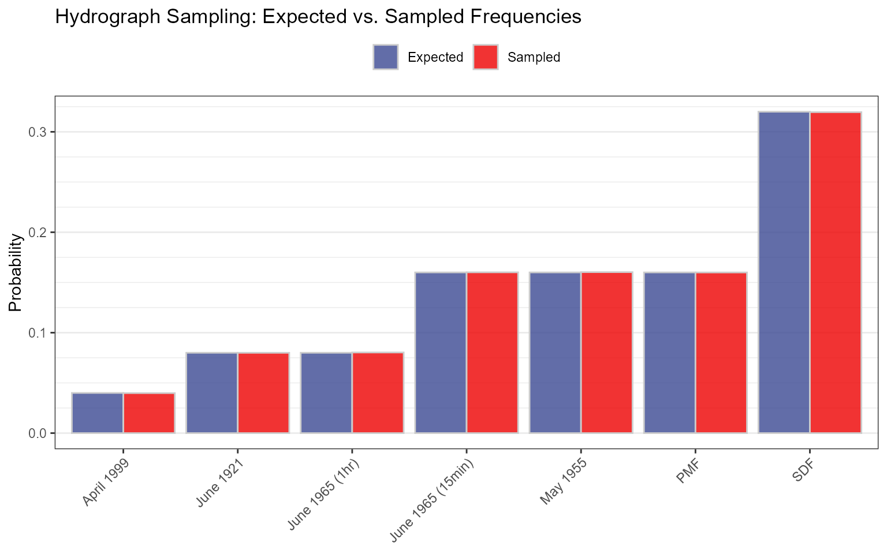

V5 - Hydrograph Shape Sampling Validation
Source:vignettes/validation-hydrograph_sampling.Rmd
validation-hydrograph_sampling.RmdPurpose
Validate that the hydrograph shape sampling module correctly applies
user-specified weights when selecting hydrograph shapes during
simulation. This test validates that hydrograph_setup()
correctly normalizes weights to probabilities and that
sample() using those probabilities reproduces the expected
distribution.
Input Data
Seven example hydrographs are loaded via
hydrograph_setup() with the following user-specified
weights:
hydrograph_names <- c("April 1999", "June 1921", "June 1965 (1hr)",
"June 1965 (15min)", "May 1955", "PMF", "SDF")
weights <- c(0.5, 1, 1, 2, 2, 2, 4)
expected_probs <- weights / sum(weights)| Hydrograph | Weight | Expected Prob. | Expected Prob. Fraction |
|---|---|---|---|
| April 1999 | 0.5 | 0.04 | 0.5/12.5 |
| June 1921 | 1.0 | 0.08 | 1/12.5 |
| June 1965 (1hr) | 1.0 | 0.08 | 1/12.5 |
| June 1965 (15min) | 2.0 | 0.16 | 2/12.5 |
| May 1955 | 2.0 | 0.16 | 2/12.5 |
| PMF | 2.0 | 0.16 | 2/12.5 |
| SDF | 4.0 | 0.32 | 4/12.5 |
Test
Set up hydrographs with weights, then sample 1,000,000 times and compare the sampled frequencies to the expected probabilities.
set.seed(42)
hydrographs <- hydrograph_setup(jmd_hydro_apr1999,
jmd_hydro_jun1921,
jmd_hydro_jun1965,
jmd_hydro_jun1965_15min,
jmd_hydro_may1955,
jmd_hydro_pmf,
jmd_hydro_sdf,
critical_duration = 2,
routing_days = 10,
weights = weights)
Nsims <- 1000000
hydro_probs <- attr(hydrographs, "probs")
hydroSamps <- sample(1:length(hydrographs), size = Nsims, replace = TRUE,
prob = hydro_probs)
sample_freq <- tabulate(hydroSamps, nbins = length(hydro_probs)) / Nsims| Hydrograph | Weight | Expected Prob. | Sampled Freq. | Difference |
|---|---|---|---|---|
| April 1999 | 0.5 | 0.04 | 0.0398 | -2e-04 |
| June 1921 | 1.0 | 0.08 | 0.0800 | 0e+00 |
| June 1965 (1hr) | 1.0 | 0.08 | 0.0803 | 3e-04 |
| June 1965 (15min) | 2.0 | 0.16 | 0.1601 | 1e-04 |
| May 1955 | 2.0 | 0.16 | 0.1603 | 3e-04 |
| PMF | 2.0 | 0.16 | 0.1600 | 0e+00 |
| SDF | 4.0 | 0.32 | 0.3196 | -4e-04 |

 ## Acceptance Criterion
## Acceptance Criterion
Sampled frequencies must be within 1% relative tolerance of the
expected probabilities, consistent with
expect_equal(sample_freq, hydro_probs, tolerance = 0.01).
| Metric | Value |
|---|---|
| Maximum Relative Difference | 0.0042 |
| Tolerance | 0.01 (1% relative) |
| Result | PASS |